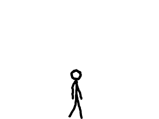
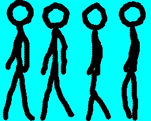

Animation

Last Updated 3/28/10
Up until this point we've pretty much have just been working with still images. This tutorial makes a stick figure walk across the screen to teach the basics of animating sprites.
The basic concept of animation is to take a series of images like the ones in this sprite sheet:
Then show one right after the other to create the illusion of movement:
So when you're animating in SDL, you're showing a sequence of SDL_Surfaces.

Then show one right after the other to create the illusion of movement:
So when you're animating in SDL, you're showing a sequence of SDL_Surfaces.
//The stick figure
class Foo
{
private:
//The offset
int offSet;
//Its rate of movement
int velocity;
//Its current frame
int frame;
//Its animation status
int status;
public:
//Initializes the variables
Foo();
//Handles input
void handle_events();
//Moves the stick figure
void move();
//Shows the stick figure
void show();
};
Here's the class of the stick figure that we're going to move across the screen.
First we have the "offSet" and "velocity" variables. Since we're only moving the stick figure right or left, we only keep track of the x offset and velocity.
Then we have the "frame" and "status" variables. "frame" keeps track of which frame in the animation to show. "status" keeps track of which animation to show, either the animation of the Foo walking left or the animation of Foo walking right.
Then of course we have the constructor, the event handler, and the functions that move and show the stick figure.
First we have the "offSet" and "velocity" variables. Since we're only moving the stick figure right or left, we only keep track of the x offset and velocity.
Then we have the "frame" and "status" variables. "frame" keeps track of which frame in the animation to show. "status" keeps track of which animation to show, either the animation of the Foo walking left or the animation of Foo walking right.
Then of course we have the constructor, the event handler, and the functions that move and show the stick figure.
void set_clips()
{
//Clip the sprites
clipsRight[ 0 ].x = 0;
clipsRight[ 0 ].y = 0;
clipsRight[ 0 ].w = FOO_WIDTH;
clipsRight[ 0 ].h = FOO_HEIGHT;
clipsRight[ 1 ].x = FOO_WIDTH;
clipsRight[ 1 ].y = 0;
clipsRight[ 1 ].w = FOO_WIDTH;
clipsRight[ 1 ].h = FOO_HEIGHT;
clipsRight[ 2 ].x = FOO_WIDTH * 2;
clipsRight[ 2 ].y = 0;
clipsRight[ 2 ].w = FOO_WIDTH;
clipsRight[ 2 ].h = FOO_HEIGHT;
clipsRight[ 3 ].x = FOO_WIDTH * 3;
clipsRight[ 3 ].y = 0;
clipsRight[ 3 ].w = FOO_WIDTH;
clipsRight[ 3 ].h = FOO_HEIGHT;
clipsLeft[ 0 ].x = 0;
clipsLeft[ 0 ].y = FOO_HEIGHT;
clipsLeft[ 0 ].w = FOO_WIDTH;
clipsLeft[ 0 ].h = FOO_HEIGHT;
clipsLeft[ 1 ].x = FOO_WIDTH;
clipsLeft[ 1 ].y = FOO_HEIGHT;
clipsLeft[ 1 ].w = FOO_WIDTH;
clipsLeft[ 1 ].h = FOO_HEIGHT;
clipsLeft[ 2 ].x = FOO_WIDTH * 2;
clipsLeft[ 2 ].y = FOO_HEIGHT;
clipsLeft[ 2 ].w = FOO_WIDTH;
clipsLeft[ 2 ].h = FOO_HEIGHT;
clipsLeft[ 3 ].x = FOO_WIDTH * 3;
clipsLeft[ 3 ].y = FOO_HEIGHT;
clipsLeft[ 3 ].w = FOO_WIDTH;
clipsLeft[ 3 ].h = FOO_HEIGHT;
}
Here's the function that sets the clips for the individual sprites in the sprite sheet.
We have two sets of sprites, the sprites clipped by clipsRight which are frames of the animation of Foo walking right and the sprites clipped by clipsLeft which are frames of the animation of Foo walking left.
We have two sets of sprites, the sprites clipped by clipsRight which are frames of the animation of Foo walking right and the sprites clipped by clipsLeft which are frames of the animation of Foo walking left.
Foo::Foo()
{
//Initialize movement variables
offSet = 0;
velocity = 0;
//Initialize animation variables
frame = 0;
status = FOO_RIGHT;
}
In the constructor for the Foo class, first we initialize the offset and velocity.
Then we set the animation to be frame 0, and we set the status to FOO_RIGHT so that the default animation is that of the stick figure walking right.
Then we set the animation to be frame 0, and we set the status to FOO_RIGHT so that the default animation is that of the stick figure walking right.
void Foo::move()
{
//Move
offSet += velocity;
//Keep the stick figure in bounds
if( ( offSet < 0 ) || ( offSet + FOO_WIDTH > SCREEN_WIDTH ) )
{
offSet -= velocity;
}
}
Now in move(), we first move the stick figure and keep it in bounds like always.
void Foo::show()
{
//If Foo is moving left
if( velocity < 0 )
{
//Set the animation to left
status = FOO_LEFT;
//Move to the next frame in the animation
frame++;
}
//If Foo is moving right
else if( velocity > 0 )
{
//Set the animation to right
status = FOO_RIGHT;
//Move to the next frame in the animation
frame++;
}
//If Foo standing
else
{
//Restart the animation
frame = 0;
}
After the stick figure is moved, it's time to do the actual animation. First we check which way it's moving.
If it's moving left, we set the status to FOO_LEFT, then increment the frame counter so the next sprite in the animation is shown.
If it's moving right, we set the status to FOO_RIGHT, then increment the frame counter so the next sprite in the animation is shown.
If the figure is still, we set the frame to 0 to restart the animation. This is so the stick figure doesn't look like it's in mid-step when it's standing still.
If it's moving left, we set the status to FOO_LEFT, then increment the frame counter so the next sprite in the animation is shown.
If it's moving right, we set the status to FOO_RIGHT, then increment the frame counter so the next sprite in the animation is shown.
If the figure is still, we set the frame to 0 to restart the animation. This is so the stick figure doesn't look like it's in mid-step when it's standing still.
//Loop the animation
if( frame >= 4 )
{
frame = 0;
}
After that we check if the frame counter already went past the fourth frame, since there's only 4 frames in the animation. If the frame counter has gone too far, we restart the animation so it will keep looping while the stick figure is moving.
//Show the stick figure
if( status == FOO_RIGHT )
{
apply_surface( offSet, SCREEN_HEIGHT - FOO_HEIGHT, foo, screen, &clipsRight[ frame ] );
}
else if( status == FOO_LEFT )
{
apply_surface( offSet, SCREEN_HEIGHT - FOO_HEIGHT, foo, screen, &clipsLeft[ frame ] );
}
}
Lastly, we show the proper sprite on the screen.
If the stick figure is moving right we apply the proper sprite from the walking right animation, if the stick figure is moving left we apply the proper sprite from the walking left animation.
If the stick figure is moving right we apply the proper sprite from the walking right animation, if the stick figure is moving left we apply the proper sprite from the walking left animation.
//Set the sprite sheet clips
set_clips();
//The frame rate regulator
Timer fps;
//Make the stick figure
Foo walk;
In our main function after the initialization and file loading, we set the clips for the sprite sheet, then declare a FPS timer, then declare the stick figure object.
//While the user hasn't quit
while( quit == false )
{
//Start the frame timer
fps.start();
//While there's events to handle
while( SDL_PollEvent( &event ) )
{
//Handle events for the stick figure
walk.handle_events();
//If the user has Xed out the window
if( event.type == SDL_QUIT )
{
//Quit the program
quit = true;
}
}
//Move the stick figure
walk.move();
//Fill the screen white
SDL_FillRect( screen, ≻reen->clip_rect, SDL_MapRGB( screen->format, 0xFF, 0xFF, 0xFF ) );
//Show the stick figure on the screen
walk.show();
//Update the screen
if( SDL_Flip( screen ) == -1 )
{
return 1;
}
//Cap the frame rate
if( fps.get_ticks() < 1000 / FRAMES_PER_SECOND )
{
SDL_Delay( ( 1000 / FRAMES_PER_SECOND ) - fps.get_ticks() );
}
}
Here we have the main loop. It's pretty much the same story as before with our Dot class from previous lessons.
So as you can see for an animation engine, all you have to do is keep track of which animation you're using and which frame you're blitting.
So as you can see for an animation engine, all you have to do is keep track of which animation you're using and which frame you're blitting.